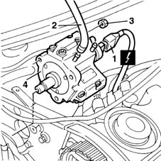

1060E10 pressure pump - r r
- Path
- Procedures > 10 ENGINE UNIT > 1060 DIESEL FUEL INJECTION > 1060E diesel pressure pump > 1060E10 pressure pump - r r
- Kind
- repair procedure (removal / refitting; the operation number is the code)
- Applies to
- engines: 1.9 JTD 8V; all production periods
- Interactive page
- https://sloeber94.github.io/elrnDB-fMltpl/en/#/2891397
Applies to: engines: 1.9 JTD 8V; all production periods
 Removing
Removing
 Refitting
Refitting4450B10 Front WHEEL (one) - R.R.
7055B42 Additional FRONT WHEEL ARCH (one), left or right - R.R.
1092G10 single engine belt r r
1092A12 crankshaft pulley - r+r for versions with air conditioner
1032D12 timing system protective cover(s) - r + r
1016A10 sound-proofing cover - r + r
1008C10 power unit upper reaction link r r
1008C14 engine link bracket - r r
1060E30 pressure pump pulley - r r
1060F50 fuel return manifold - r r
1060F20 pressure pump/manifold pipe - r r
1. Disconnect the electrical connection from the fuel pressure regulator.
 | Name | Connector |
|---|---|---|
1 | Fuel pressure regulator |
2. Disconnect the fuel inlet hose from its fitting on the pump.
3. Unscrew the nuts retaining the pump to the mount.
4. Remove the pressure pump.

Applies to: engines: 1.9 JTD 8V; all production periods
Refitting
RemovingFit the pressure pump to its mount.
Tighten the nuts securing the pump to the mount to torque.
 | Fastening | Component | Ø | Value (daNm) |
|---|---|---|---|---|
- | Bolt | CYLINDER HEAD | M10 | 2.5 |
Connect the fuel inlet line to the pump.
Connect the electrical connection to the fuel pressure regulator.
| Name | Connector |
|---|---|---|
- | Fuel pressure regulator |
1060F20 pressure pump/manifold pipe - r r
1060F50 fuel return manifold - r r
1060E30 pressure pump pulley - r r
1008C14 engine link bracket - r r
1008C10 power unit upper reaction link r r
1016A10 sound-proofing cover - r + r
1032D12 timing system protective cover(s) - r + r
1092A12 crankshaft pulley - r+r for versions with air conditioner
1092G10 single engine belt r r
7055B42 Additional FRONT WHEEL ARCH (one), left or right - R.R.
Topics linked from this page (13)
- 1008C10 power unit upper reaction link r r
- 1008C14 engine link bracket - r r
- 1016A10 sound-proofing cover - r + r
- 1032B14 toothed timing belt - r + r for timing adjustment or replacement versions with air conditioner
- 1032D12 timing system protective cover(s) - r + r
- 1060E30 pressure pump pulley - r r
- 1060F20 pressure pump/manifold pipe - r r
- 1060F50 fuel return manifold - r r
- 1092A12 crankshaft pulley - r+r for versions with air conditioner
- 1092G10 single engine belt r r
- 4450B10 Front WHEEL (one) - R.R.
- 7055B42 Additional FRONT WHEEL ARCH (one), left or right - R.R.
- N77 Fuel pressure regulator